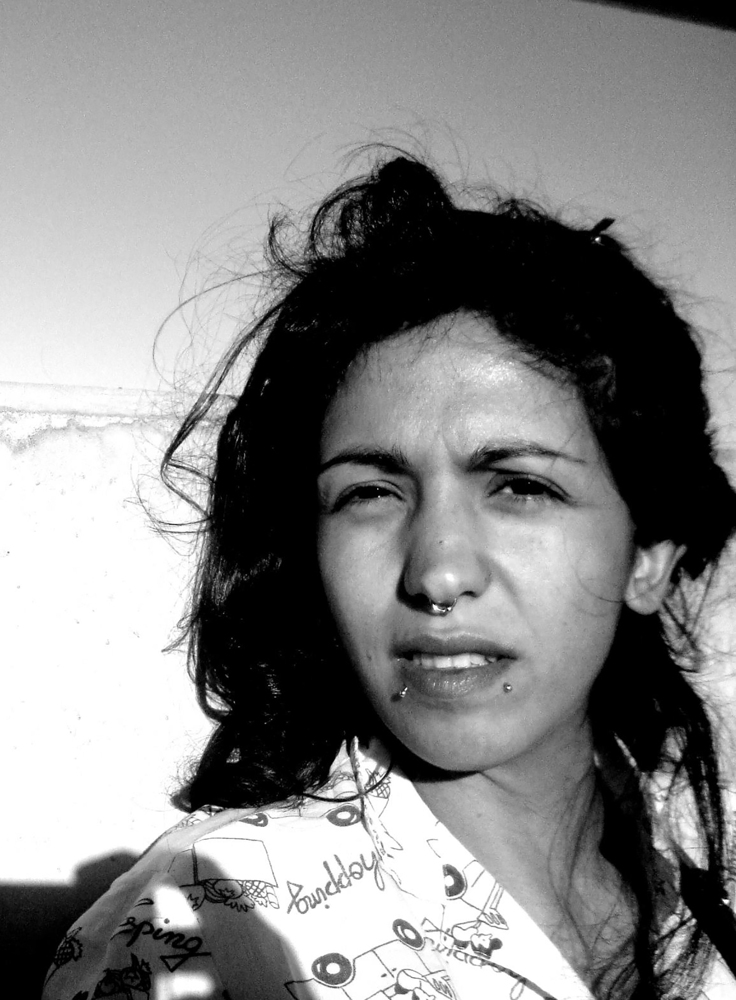

Sobre mí

Nací en la ciudad de Santa Fe una tarde calurosa de Enero y a los pocos años nos vinimos a vivir a
Capital Federal con mi hermana y mis padres. Mi papa era músico y orfebre, mi mamá es Lic. en
Letras. Mi abuela paterna, Ana María Pizarro, nacida en Unquillo, Córdoba, es pintora, fue ella
quien generó en mí la pasión por la pintura. Durante la primaria asistí al Instituto Vocacional de
Arte (Labarden). A los años de cursar la Licenciatura en Artes Visuales con orientación en Pintura,
en el UNA, dejo la facultad y me voy de viaje. Dos años viajé por Sudamérica, y un año viví en
México. Una vez vuelta a Buenos Aires, terminé la carrera de Lic. En Artes Visuales. En la UNA.
Trabajé como realizadora escenográfica, en dirección de arte para cortos de cine, asistente de
utilería y producción en publicidad, en editorial y como secretaria personal. También tuve una
marca propia de muñecos de tela por varios años. Hice la Tecnicatura en Escenografía y Vestuario.
Participé del colectivo “Cara y lleca” donde interveníamos el espacio público junto a artistas de
diferentes disciplinas (2008-2009). Estudié pintura con Juan Astica y Carlos Baragli, Guillermo
Cuello, Carlos Bissolino y Martin di Paola (en la facultad). Taller de dibujo con Oscar Smoje (2015),
taller de pintura con Daniel Callori (2016-2017), y taller de análisis de obra con Perro Verde (2016),
con Pablo Siquier (2017) y Tulio De Sagastizabal (2018-2019).
Algunas exposiciones colectivas fueron “Muta” feria de fanzines y música (2014); en el Salón de los
Rechazados, muestra de pintura y fotografía “Los gerontes también emergen”(2014); Art office
“Donde el arte sucede” (2014); Festival de poesía “Pool Poetry”(2014); Pirámide Selva Celebración
III (2015); Feria Eggo en prov. de San Juan (2015); “Mostro IV” en Fábrica Perú (2015); Hotel
Caesar Park Gallery con obra estable durante todo el 2016; muestra de video e instalaciones
pictóricas “Revelaciones” en Dottore Malatesta (2017); “Cyborg barrial” (2017); “Talleres abiertos
de Belgrano” (2017); “Velocidad” muestra colectiva en el Centro Cultural San Martín, curada por
Pablo Siquier (2017); “808” en Multiespacio Korova (2017); colectiva “Gran Celebración” en la
boca (2017); Almacén de obra en el Taller Paz Soldan (2018), “Synesthesia”, en La Confitería de
Colegiales (2018); muestra de pintura y poesía “Solo los amantes están vivos” en espacio 1040
(2019); “Cracked Society” muestra de instalaciones colectivas (2019), “Flipada japonesa”, muy
individual entre música y poesía (2020). Mi primer exposición individual “Una siesta de delirios”,
en la Galería “Un lugar en el mundo” (2018).
La pintura para mí es un problema a resolver, que no busca ser resuelto, sino que en el mismo
camino de esta incertidumbre es donde me encuentro haciendo pintura. Intentando que la
representación sea algo secundario y que la sensación de algo más sea el interés principal. Pongo
más peso en las insinuaciones, jugando con el equilibrio y el desequilibrio. El modernismo
abandonó la figura, pero también nos pidió que atendiéramos los problemas formales, en otras
palabras, la forma en que las cosas se construyen o componen.